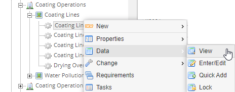
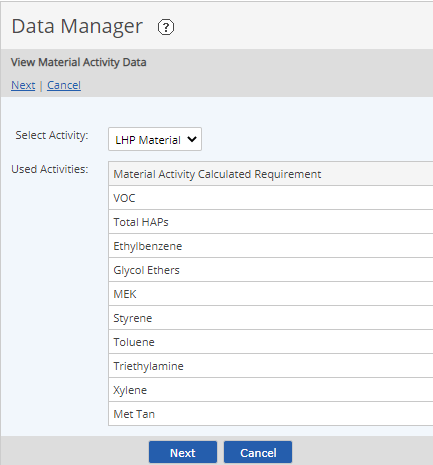
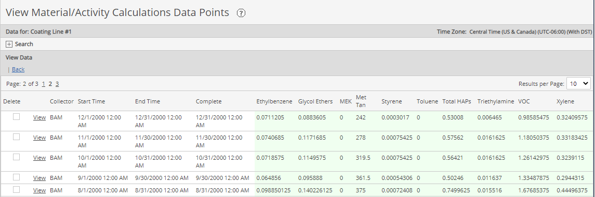
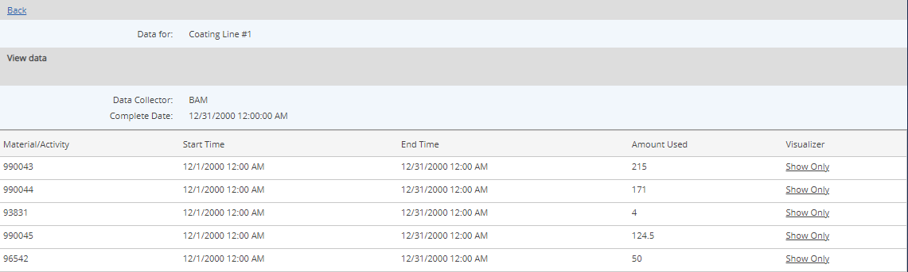
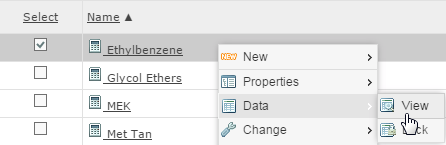

Data for Material Activity Calculated Requirements is both entered and viewed by location, since data entered at a location triggers calculations for all the associated Material Activity Requirements.
To view Material Activity Calculated data:
Select the parent object for the Material Activity Calculated Requirements, right click and choose Data > View.

If the parent object contains regular numeric requirements as well as and Material Activity requirements, select Material/Activity. If only one data type is available, this step is skipped.
Next, if necessary, select the Activity. In most cases, only one Activity is associated with the Material Activity requirements under a single parent object. However, if more than one Activity is used in this location, you may need to select the appropriate Activity. The Material Activity requirements with the associated Activities are shown in a table.

Click Next.
Calculated data for all Material Activity Requirements in that location associated with the selected Activity is displayed.

To see the input values used in the calculations, select the View link.
Input values for the specific use variables used in the calculations are shown.

The Visualizer Show link (in the far right column) can be used to view the intermediate calculations used to produce the final calculated result. See Calculation Visualizer for MACs.
You may also view data for a single Material Activity Requirement at a time, although you cannot view more than one requirement by this method. To view data for more than one requirement, you must select the parent object.
To view data for a single Material Activity Requirement:
Select the requirement, right click and choose Data/View.
